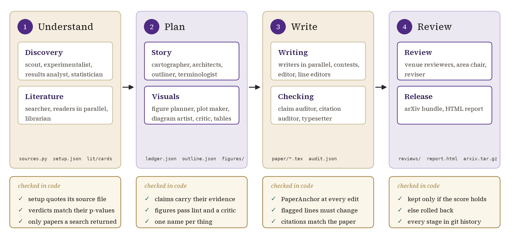

A team of agents writes your paper from your research repository.
25 agents in eight teams split the work the way a lab would, and independent teams work at the same time: survey the results and the literature, plan the story, draw the figures, write, audit and review. Code checks every hand-off. Each number recomputes from your raw data, each citation is fetched and checked against the paper it cites, and your data stays read-only.

What Scriptorium produced from the small label-noise study in examples/demo, start to finish, with no human edits.
Every one carries a recipe and recomputes from results/runs.jsonl.
Every entry fetched from a bibliographic database; none typed by a model.
4 pages of main text and about 486k output tokens. Every check passes on the final paper.
Each agent is a Claude Code subagent whose instructions you can read and edit. Stages start as soon as the stages they need are done; after each one, plain Python checks the result before the next agent starts.
A scout maps the repository; an experimentalist records the setup from the code; a results analyst writes a recipe per number; a statistician adds a paired test per comparison.
✓ setup facts quote their source; verdicts match p-valuesA searcher maps the field right after the scout; readers card each paper from its abstract, in parallel; a librarian adds the official entries.
✓ only papers a search returned; nothing typedA cartographer builds the claim ledger; three architects pitch storylines and a panel picks one; an outliner plans the paper; a terminologist fixes the names.
✓ every claim has evidence, scope and strengthA figure planner specs each figure; a plot maker and a diagram artist draw them from code; a critic sends weak ones back; a table setter builds tables from recipes.
✓ figures pass lint at print sizeWriters draft sections in parallel, with contests for the abstract and introduction; an editor makes one paper; line editors polish each section.
✓ every number recomputes at each editA claim auditor checks every claim sentence; a citation auditor checks every citing sentence against the cited paper; a typesetter fixes layout.
✓ flagged sentences must changeReviewers for your venue score the paper; an area chair ranks the changes; a reviser makes them.
✓ kept only if the score holds, else rolled backPackages the arXiv bundle and writes an HTML report that links every number, citation and figure to its source.
✓ every accepted stage in git historyThe checks do not ask a model whether the paper is right. They rerun, fetch and compare.
The filter reaches 92.6\%\src{acc_dg_40_filter_mean}
on digits at 40% label noise.@source("acc_dg_40_filter_mean", means="test accuracy (%) on clean test split, digits, noise 0.4, filter, mean over 5 seeds") def acc_dg_40_filter_mean(): return _mean(_accs("dg", 40, "filter"))
scriptorium cite add; every citing sentence is checked against the cited abstract.paper/; a lock quarantines new files and stops the run on any change.The first pages of the 5-page paper Scriptorium wrote from examples/demo. Click for the PDF.
You need Claude Code and a LaTeX engine (tectonic or latexmk).
pip install git+https://github.com/thanh-huy-nguyen/scriptorium cd my-research-repo scriptorium init --venue neurips # official style files; locks your data scriptorium doctor # checks Claude Code, LaTeX, the databases scriptorium run # the whole team; writes paper/main.pdf scriptorium watch # live view, in a second terminal
claude plugin marketplace add thanh-huy-nguyen/scriptorium
claude plugin install scriptorium@scriptorium
# then, in a session: /scriptorium:write-paperscriptorium run --pause-at story
scriptorium rollback outline
scriptorium audit path/to/paper # check any LaTeX paper@software{nguyen2026scriptorium,
title = {Scriptorium: A Team of Agents That Writes a Paper From Your Repository, With Every Number and Citation Checked},
author = {Nguyen, Thanh-Huy and Bagci, Ulas},
year = {2026},
url = {https://github.com/thanh-huy-nguyen/scriptorium}
}